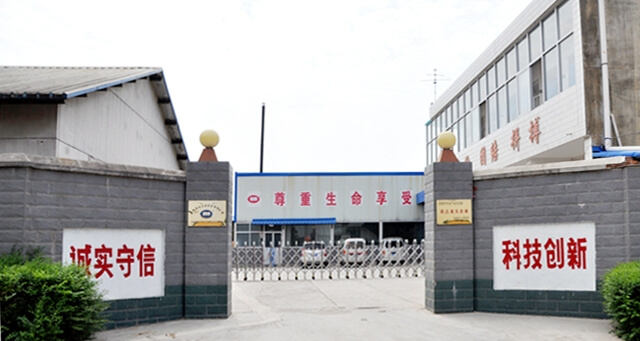
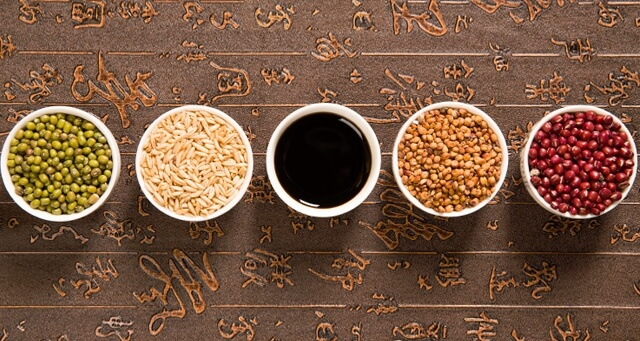
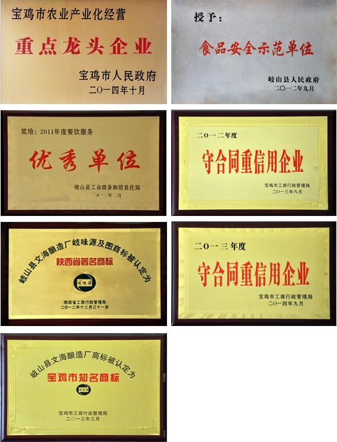

岐味源食品有限公司坐落于周文化发祥之地、素有陕菜之乡美称的宝鸡市岐山县。自2004年创立，历经十年的艰辛创业和迅猛发展，已经成为年产优质食醋10000余吨，产值近两千万元的现代化食品加工企业。
公司现有员工70余人，划分为生产、销售、行政等六大专业职能部门，并在西安、宝鸡两地设有专门的销售分支机构。凭借着先进的生产设备和庞大自有配送能力，公司能够生产以岐山香醋为核心的5个系列40多个产品，并将产品销往了西北、华北各地。
公司全体员工秉承创始人杨海刚先生“低调做人、认真做事”“以质量为核心，以竞争为动力”的经营理念，团结奋进，在不断吸收当地传承千年的酿醋工艺精髓的同时，运用现代科技持续提升产品品质，力争将“岐味源”打造为最具代表性的岐山醋品牌。
好醋出岐山，岐山岐味源。岐山醋的酿造历史可以追溯到三千年前的西周时期。《周礼》中有“醯人掌五齐、七葅”，“五齐”就是我国古代酿造的五个过程，庄颁《物原类考》中考证“周时已有醋，一茗苦酒，周时称醯”。岐山醋的制曲最为讲究，需在每年三伏天高温季节，把大麦、莞豆磨细，与麸皮搅拌成坯子，再用模子制成曲块，埋在麦糠里任其发酵，半月后取出晒干存放，其他时间均无法进行。以此法酿造的岐山醋，酸香适宜，酸气纯正，入口绵酸，后味酸香，味净酸长，色泽红润清亮。岐味源正是严格遵循了古人的酿造工艺并结合现代化的生产，才制作出正宗优质的岐味源岐山香醋。
公司创始人、总经理杨海刚先生是地道的岐山人，自幼受到岐山浓厚的饮食、酿醋文化影响，在2004年毅然放弃优厚稳定的教师公职，自筹资金创立了现在的岐味源食品有限公司。在十年的时间里，既经历了初创期的艰辛，也收获了成功的喜悦。随着岐味源品牌影响力不断地提高，公司先后被陕西省、宝鸡市工商行政管理局授予“陕西省著名商标”、“宝鸡市知名商标”。同时还是岐山县的“食品安全示范单位”和“餐饮服务优秀单位”。杨海刚总经理也多次被县政府和行业主管部门评为“优秀创业先进个人”、“明星企业家”等荣誉称号；2011年6月10日《宝鸡日报》在对企业进行是深入采访后，做了专题报道。
路漫漫其修远兮，吾将上下而求索。正是怀抱这种不断追求不断探索的精神，岐味源全体员工在杨海刚总经理的带领下，将竭诚为广大消费者提供优质安全的产品和良好的服务。以此来回报广大消费者的支持和厚爱。